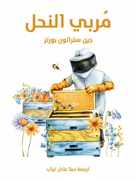

مُربي النحل

قراءة عربية أصلية محددة النطاق في الصفحات 9، 10 من ملف PDF المرتبط، وليست تلخيصا كاملا للكتاب. نناقش ما تدعمه هذه المقاطع فقط.
سيد قراره
يفتتح الفصل الأول «سيد قراره» باسم البطل: جيمس لويس ماكفارلين؛ أنزل صاحب هذا الاسم قدميه على الأرض وجلس منتصبا فجأة، محيطا ركبتيه بيديه الكبيرتين حتى يتوازن. كان طوال الساعة الماضية يصغي بين فترات من النعاس شبه الواعي إلى الحكم الذي يتلوه رجال في موقع المسئولية على الرجال الذين يملكون زمام مصائرهم في أيديهم، لكن لم يرق له أن تعرض حالته هو عليهم للبت فيها. لقد جلس في ذلك الصباح طوال ساعة تحت أشعة الشمس أمام مبنى المستشفى الضخم، حيث يحاول بلده علاج الرجال الذين كانوا بالخارج للمشاركة في الحرب، وأدرك مؤخرا أنه في معركته لاستعادة عافيته يشن حربا خاسرة؛ إذ لم يستطع التغلب على الجرح الناجم عن إصابته بشظايا. نقل النص إلى العربية دينا عادل غراب.
زاوية وحدود القراءة
قراءة الصفحتين ٩ و١٠ (الفصل الأول)؛ النطاق تقديم البطل فقط.
الطبعة والقراءة
٢٠٢٢ جميع حقوق النشر الخاصة بتصميم هذا الكتاب ،وتصميم الغلاف ،والترجمة العربية لنص هذا الكتاب م ر خصة بموجب رخصة املشاع الإبداعي :ن سب ا ملصن ف ،الإصدار ٤٫٠جميع حقوق النشر الخاصة بنص العمل الأصلي خاضعة للملكية العامة
تنزيل PDF المجاني ↓ القراءة والمصدر الرسمي ↗